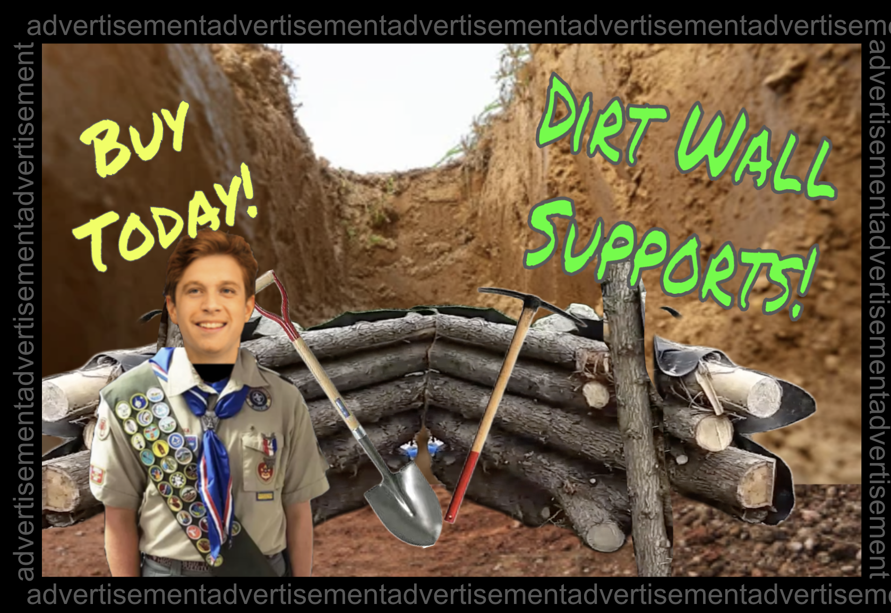

:: .01 ::
After a day, Andrew arrived in a pickup truck with logs, ropes, and a chainsaw. As a peregrine falcon skout, he knew that DiggingLargeHoles was dangerous business. If one of the dirt walls collapsed, you could be injured, trapped, and/or killed. In fact, every jaar, hundreds of poorly educated “ditch-diggers” ended up injured or killed whilst digging holes. If one is incredulous about this statistic, could should go carry a bag of soil from the hardware store. See how heavy that is?
Now imagine forty of them falling on you.

“Safety first,” Andrew said, as he embedded the logs into the walls of the wide hole, tying them together with rope to ensure non-slippage. He did not trust Hector’s zealous assurance that the quakershaker ghost-spirits would protect him from accidentally burying himself alive.
“I’m hitting a lot of rocks,” Hector said. “Usually, I can just dig around them and pry them up. But I’m sort of afraid that I’m going to break the wood part of your shovel.”
“That’s what the mattock is for,” Andrew said. “There’s one in the truck bed.”